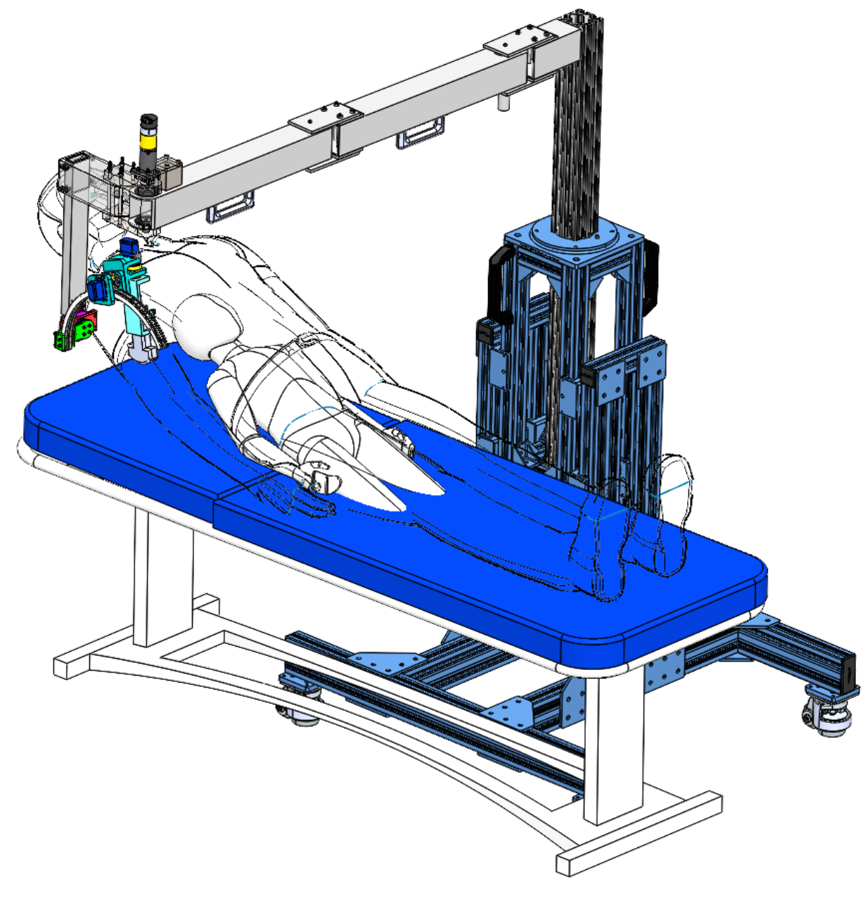
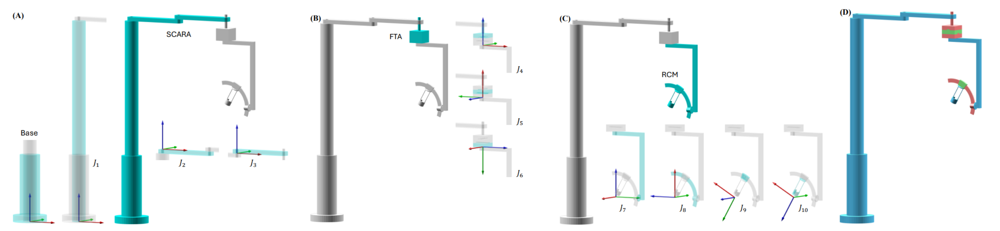

Remote Ultrasound Robot (RUR)
August 2023 - December 2025
Motivation & Objectives

Under-resourced remote areas have limited access to skilled diagnostic ultrasound examinations. However, to accurately diagnose the most common birth defect CHD (Congenital Heart Disease) and other heart complications, technical expertise is often required. To address this we sought to create a teleoperable robot capable of replicating the high dexterity motions necessary for pediatric diagnostic ultrasound in remote communities.
Design Highlights
The design can be broken up into three main assemblies.
- SCARA (Selective Compliance Articulated Robotic Arm) - An unpowered assembly for enabling gross positioning of the RCM.
- FTA (Fine Translational Adjustment) - Three coupled, prismatic joints to provide fine positioning of the RCM.
- RCM (Remote Center of Motion) - Series of rotational joints permitting spherical motion, with a redundant joint for allowing continued motion when the RCM becomes obstructed.

Contributions & Outcomes
Contributions
- Led the product team, recorded meeting notes, and delegated next steps
- Proposed initial design concept
- Assisted in both the SCARA joint design and RCM CAD
- Co-derived robot's DH parameters (forward kinematics)
- Mapped out electrical schematics
Project outcomes
- Verified working kinematics and achievable orientations necessary in echocardiography via MATLAB simulations
- Confirmed all motors and joints fully actuate and complete the expected ranges of motion
- Completed part drawings and received all parts ordered and machined
- Currently working through building the first revision of the prototype